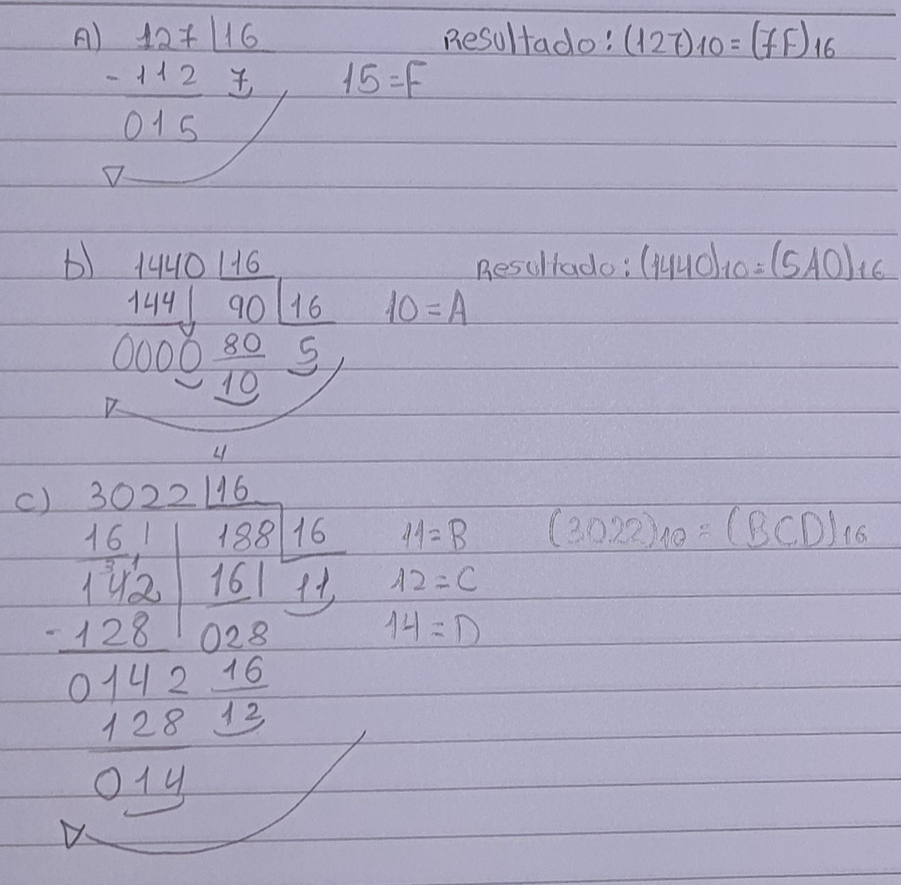

Numeros Hexadecimais
O que são?
Os numeros hexagonais são iguais os números decimais, mas após o número 9 começam a serem utilizadas as letras: A, B, C, D, E e F. Contendo 16 algarismos, o sistema mais difícil na minha opinão, abaixo terá uma tabela completa de todos os sistemas numéricos.
| Decimais |
Hexadecimais |
Octais |
Binários |
| 0 |
0 |
0 |
000 |
| 1 |
1 |
1 |
001 |
| 2 |
2 |
2 |
010 |
| 3 |
3 |
3 |
011 |
| 4 |
4 |
4 |
100 |
| 5 |
5 |
5 |
101 |
| 6 |
6 |
6 |
110 |
| 7 |
7 |
7 |
111 |
| 8 |
8 |
10 |
1000 |
| 9 |
9 |
11 |
1001 |
| 10 |
a |
12 |
1010 |
| 11 |
B |
13 |
1011 |
| 12 |
C |
14 |
1100 |
| 13 |
D |
15 |
1101 |
| 14 |
E |
16 |
1110 |
| 15 |
F |
17 |
1111 |
Conversões:
Para utilizarmos as conversões é exatamente da mesma forma dos sistemas anteriores, divisão e potenciação.
Base 10 para a base 16:
Em uma conversão de base 10 o número sempre seraá dividido por 16, e, caso ocorrer do resto ser maior que 9, ele será substituído pela devida letra. Exemplo: 14 = E
Veja abaixo:

Base 2 para a base 16:
Para realizar a conversão fica muito simples. Se estiver com a tabela em mãos, 4 dígitos binários irão designar 1 dígito hexadecimal.
O número binário 10100100 será dividido em 2 partes com 4 dígitos cada. Em seguida é só voce conferir na tabela. E o resultado dessa conversão será A4 em hexagonais.
Base 16 para a base 2:
O processo de conversão é o mesmo do anterior, só que ao invés de você separar o número binário em partes, você irá verificar cada dígito hexadecimal na tabela. Logo após realizar a conversão, 1 dígito hexadecimal = 4 dígitos binários
O número hexadecimal 2F9 resultaria nesse seguinte número binário: 1011111001
Voltar